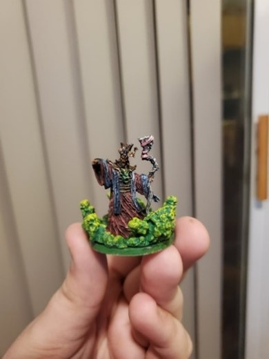
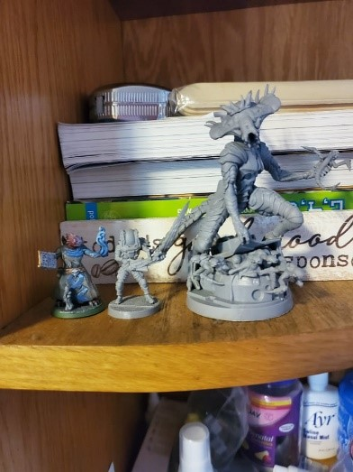
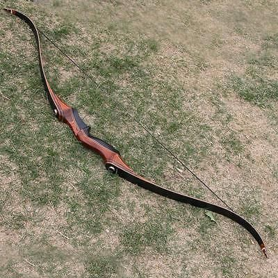
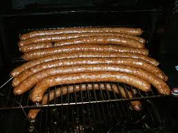
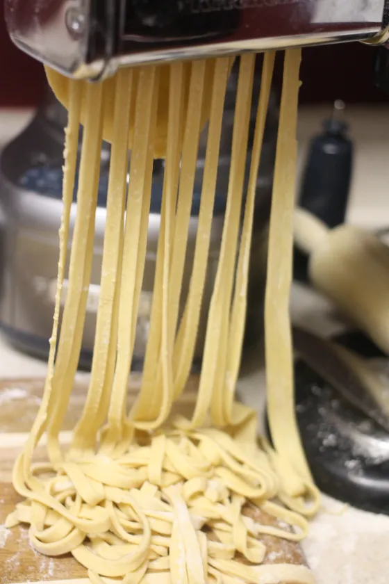

In his free time, Will often times finds himself enjoying various Table Top games such as Dungeons and Dragons, Munchkin, Catan, and a plethora of other board/table top games.
One of his all time favorite games is one called BattleTech. BattleTech is a table top game wherein two or more opponents conduct a 'battle simulation with fururistic forces. A good portion of his leisure time is spent either playing the game or painting the miniatures he uses for the game. Will was initially introduced to Table Tops at a young age when his uncle gifted will an old collection of miniatures to paint and play with; he has enjoyed table tops ever since.
Hunting:

When he finds himself in the great outdoors, Will often finds himself hunting. Will particularly enjoys bow hunting and will often go to Montana with his Father, Uncle, and/or his Grandfather. Unfortuneately due to work, Will missed the last family hunting trip during which hi grandfather successfully hunted a bear, albeit with something a bit stronger than Wills traditional bow. For those interested in getting into Bow hunting or even just archery, Will reccomends checking out pawn shops at the end of hunting season as he has found many great deals on high quality arrows and bows.
Cooking:

Will does not let the hunted meat go to waste either; he frequently cooks at his home and often incorporates the meats he and his family have hunted. Pairing this with his enjoyment of Italian food, he will make his own italian sausage and meaty pasta sauces with the meat. That pasta sauce will go on top of the noodles that he now makes at home with his recently acquired Kitchen Aide mixer with the noodle attachments.